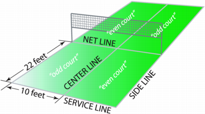
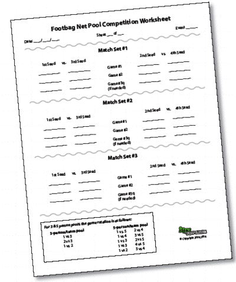
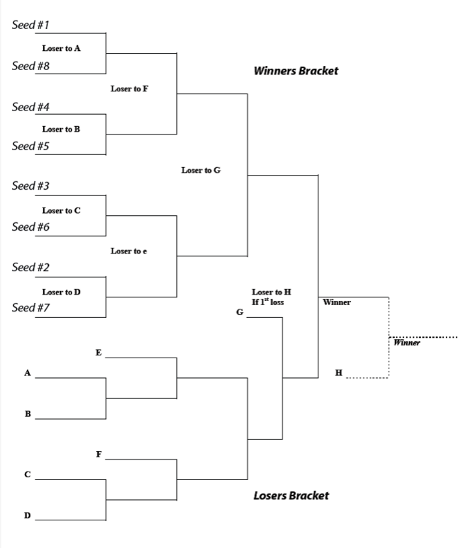
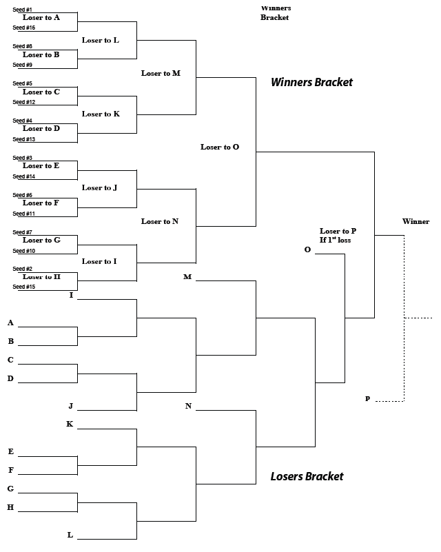
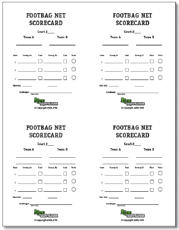

WHAT'S NEW OVERVIEW F.A.Q. FORUM MEMBERS REFERENCE CLUBS EVENTS RESULTS PHOTOS VIDEOS FREESTYLE NET GAME IFPA GROUPS RULES LINKS
*Copyright © 2026, International Footbag Players' Association
A 501(c)(3) Non-Profit Corporation
Article III - Footbag Net
Comment: Footbag net is a court game played either one-on-one or two-on-two (singles or doubles) over a 5 ft. net. It combines basic kicks, serves, spikes and digs. Each player or team attempts to score points while serving. In singles play, two kicks are allowed per side. In doubles play, three kicks are allowed per side and players (teammates) must alternate contacts. The court is 20 ft. wide and a total of 44 ft. in length, with the net dividing the court into two 22 ft. deep courts. The court is also divided down the center to form four equal serving quadrants.
Outline of Contents
- 302.01 Court Dimensions
- Figure 2 - Net Court Dimensions
- 302.02 Net Height and Stanchion Placement
- 302.03 Court Surface
- 302.04 Boundary Lines
- 302.05 Footbag Net Equipment
- 302.06 Line Width
- 303.01 Preliminary Procedures
- 303.02 General
- 303.03 Scoring Systems
- 303.04 Service
- 303.05 Scoring
- 303.06 Scorekeeper Responsibilities
- 303.07 Time-Outs and Breaks Between Games
- 303.08 Out-of-Bounds Play
- 303.09 Fouls
- 304.01 Seeding
- 304.02 Double-Elimination Competitive Format
- 304.03 Pool Format
- 304.04 Consolation Brackets
- Figure 3 - Pool Competition Worksheet
- Figure 4 - Example Pool Layout
- Figure 5 - Five to Eight (5 to 8) Person Double-Elimination Bracket
- Figure 6 - Nine to Sixteen (9 to 16) Person Double-Elimination Bracket
- Figure 7 - Footbag Net Scorecard
301. Interpretation
The purpose of the following rules is to provide guidelines to best describe how footbag net is played. Since its inception, footbag net has relied on good sportsmanship and fair play by all players. Therefore, the players have a basic responsibility to play within the regulations set forth and to have mutual respect for all opponents and fellow players. Violations of the player's basic responsibilities may result in penalties and disqualification by the tournament director.302.01. Court Dimensions
The footbag net court dimensions are the same for both singles and doubles play. The court dimensions are 20 feet in width divided in half by the center line and 44 feet in length divided in half by the net, making four equal serving quadrants. For each side, the right hand serving quadrant will be considered the "even" side, and the left hand serving quadrant will be considered the "odd" side.
-
Figure 2 - Net Court Dimensions

302.02. Net Height and Stanchion Placement
The net height is five feet and is measured at center court. Net stanchions should be as close as possible, but just outside the net court boundaries; net stanchions are out of bounds. (A net mesh of one inch is recommended so that the footbag may not pass through.)302.03. Court Surface
The footbag net court may consist of or have any type surface. Well-trimmed grass is suggested. The surface must be essentially flat and free of holes and obstructions. A player's safety must be a determining factor when laying courts. Use of gym floor tape and/or existing court lines is recommended for laying indoor courts.302.04. Boundary Lines
The boundary lines surrounding the court are part of the court and are played in-bounds. If the footbag touches any part of the line, the shot is played as a good shot. In the absence of line judges, if a player (team) cannot see the footbag out, the shot must be called in.302.05. Footbag Net Equipment
Touching any part of the net equipment such as the net, stanchion and guy wires constitutes a foul, unless the bag is driven into the net with such force that the footbag's trajectory causes the net to contact a player on the other side (See Foul Definitions, 303.09-C).
A. Choice of Footbag: Prior to the start of play, players (teams) shall decide which footbag will be used in the game (match). In case of disagreement, tournament officials will provide a footbag.
B. Footbag Dimensions: Footbags used in regulation footbag net play must fall within specifications set forth in Article 1, Section 107.01-D.
C. Coin Toss: A coin toss shall be used before the first game to determine service or side. When possible, the head judge or scorekeeper shall be responsible for tossing the coin. The player/team with the highest seed going into the match shall call the first toss. If a tie-breaker game is required (i.e., the third game in rally or classic scoring), the team losing the coin toss of the first game shall call the coin toss for the third game. The winning player/team of a coin toss may choose exactly one of the following options before the start of that game:
1. Service: The player/team winning the coin toss may choose whether to serve or receive first. If this is the first game of the match, the opposing player/team may thus choose which side of the court they will occupy for the game ("side").
2. Side: The player/team winning the coin toss may choose which side of the court they will occupy for the game. If this is the first game of the match, the opposing player/team may thus choose whether to serve or receive first ("service").
3. Defer: The player/team winning the coin toss may forego their right to choose service or side, and may instead defer to their opponent(s) to make that choice (in which case the player/team losing the coin toss shall be treated as the winner of the coin toss for the options above).
D. Ready for Service: Each person shall be in a ready position preparing for play by either standing in the proper receiving quadrant or standing behind the service line. Server must wait until receiver is ready.
E. Changing Sides: Players/teams are required to change sides of the court, according to the type of scoring system used. See 303.04-H Changing Sides for a detailed description of conditions for changing sides with each of the scoring systems.
A. Live Footbag: The footbag is considered "live" beginning with the moment of contact by the server's foot, and is considered "dead" as soon as the footbag touches the ground, net stanchions, anything beyond the court perimeter, drops below the net without going over it after a player or team has used the maximum allowable number of kicks, or a foul occurs, whichever comes first. Note: A Net Equipment Foul supersedes all other fouls, and may occur after the footbag would otherwise be declared dead (see 303.09-C), unless a net plane foul (see 303.09-D) causes a net equipment foul, in which case the contact foul supersedes the net equipment foul, or unless the footbag is driven into the net with such force that the footbag's trajectory causes the net to contact a player on the other side of the net.
B. Legal Kicks: A kick is legal when the footbag is contacted with one continuous striking motion by a legal kicking surface. This includes double hits, rolls, and pushes, as long as a striking motion is used and the delay, double hit, or roll is clearly accidental.
C. Player Classification: No player will be allowed to move down in division in the same tournament (using singles net as the standard). For instance, after playing singles footbag net in an intermediate division, a player may not play doubles footbag net in a novice division.
1. Players will not be allowed to substitute for any reason once their first match of the tournament is in progress.
2. The use of arms to screen a shot is not allowed. Screening the serve, in any way, is not allowed.
3. Uniforms are encouraged for all competitors in net events.
A. Classic Scoring: With classic scoring, points are only awarded when the serving team wins a rally. A rally is the sequence of playing actions from the moment the service is hit by the server until the footbag is ruled "dead". The serve (but no point) is awarded to a receiving team who wins a rally, also referred to as a "side out".
B. Rally Scoring: In rally scoring, a point is awarded to the winner of each rally, regardless of who serves. The serve and a point are awarded to a receiving team who wins a rally.
C. Game-Set-Match (GSM) Scoring: GSM is a scoring system similar to tennis, wherein games are played to four points, and six games make up a "set". The winner is then determined by a "match" that is the best of 3 sets.
1. Selection: The tournament director may choose any of the above three official scoring systems for any of the events offered at the tournament. Different events may use different scoring systems -- e.g., intermediate singles net could use GSM where open doubles uses rally scoring. However, this is strongly discouraged, as it can lead to confusion and inconsistency.
2. Player Notification: Players must be notified of the scoring system to be used at least 24 hours before the start of competition, and again at the players' meeting and/or before each round of competition.
3. Consistency: The scoring system for a given event must not change between rounds of the event. In other words, if rally scoring is used in the qualification round, it must also be used for quarterfinals, semifinals, and finals. It is never appropriate to change scoring systems within a single event.
303.04. Service
Each server has one chance to get a good serve into the proper receiving court (novice classification may be allowed two serve attempts). The serve is made from behind the service line of either the right-hand or left-hand court (see Service Rotation). If the serve hits the net, but still falls over the net and into the proper receiving court (a let serve), the server will be allowed a second serve. A let serve on the second attempt causes a side out.
B. Service Rotation: Players/teams serve from the left- or right-hand court to start each rally in a game based on the scoring system being used (see 303.03 Scoring Systems), as detailed below:
1. Classic Scoring: When the serving person's or team's score is zero or even, service is made from the right-hand court; when the serving person's or team's score is odd, service is made from the left-hand court. Service must go diagonally ("cross-court"), e.g., from server's left to receiver's left, or from the server's right to receiver's right. In doubles, the serving team must switch sides of the court as necessary for the server to be on the correct side. Receiving teams do not switch sides.
2. Rally Scoring: Service rotation is the same as with classic scoring, above, except that at the end of the first game in a match, the losing player or team of the first game shall decide which player or team shall serve first in the second game.
3. GSM Scoring: When serving in a standard game, the server shall stand behind alternate halves of the court, starting from the right-hand court in every game. In a tie-break game, the service shall be served from behind alternate sides of the court, with the first service from the right-hand court. In both game types the second serve continues from the left side of the court.
C. Server Rotation: Service rotates between the players/teams in a game according to scoring system being used (see 303.03 Scoring Systems), as detailed below:
1. Classic Scoring: In singles, at the end of each standard game, the receiver shall become the server and the server shall become the receiver for the next game. In doubles play, for each game of a match, the first team to serve chooses which player will begin service. After the first team makes their choice, the receiving team will choose who will receive the first serve. The player on the receiving team who does not receive the first serve will be the player who serves first after the first side out. For each subsequent side out of the game, service will rotate to each player in turn. In the second game of a multi-game match, the losing player or team serves first. A coin toss determines which team serves first in a third game. When no scorekeeper is present and a team has served out of order, the team loses the serve and any points gained during the out of service foul. All players resume correct positions on the court.
2. Rally Scoring: In doubles play, for each game of a match, the first team to serve chooses which player will begin service. After the first team makes their choice, the receiving team will choose who will receive the first serve. The player on the receiving team who does not receive the first serve will be the player who serves first after the first side out. For each subsequent side out of the game, service will rotate to each player in turn. In the second game of a multi-game match, the losing player or team has the choice to serve or receive first. A coin toss determines which team serves first in a third game. When no scorekeeper is present and a team has served out of order, the team loses the serve and any points gained during the out of service foul. All players resume correct positions on the court.
3. GSM Scoring: In singles, at the end of each standard game, the receiver shall become the server and the server shall become the receiver for the next game. In doubles, the team due to serve in the first game of each set shall decide which player shall serve for that game. Similarly, before the second game starts, their opponents shall decide which player shall serve for that game. The partner of the player who served in the first game shall serve in the third game and the partner of the player who served in the second game shall serve in the fourth game. This rotation shall continue until the end of the set.
a) Receiving Order (Doubles Only): The team due to receive in the first game of a set shall decide which player will receive the first serve in the game. Similarly, before the second game starts, the other team shall decide which player will receive the first serve of that game. The player who was the receiver's partner for the first serve of the game shall receive the second point, and this rotation shall continue until the end of the game and the set.
D. Scoring: The server shall call the score before each serve. The server may not serve until one second after calling the score.
E. Partner Position: In doubles net play, the server's partner is required to stand inside his respective quadrant during the service. Screening of the serve by the server's partner is a foul.
F. Support Leg Position: The support foot of the server must remain completely behind the boundaries (within sideline and centerline extensions) of the proper service quadrant until contact with the footbag has been made.
G. Continuous Play: In principle, game play should be continuous, from the time the game starts (when the first service of the game is put in play) until the game finishes. Between points, a maximum of 20 seconds is allowed. This time starts the moment a point is won (i.e., as soon as the footbag is "dead"), and ends when the server strikes the footbag to begin the next point.
1. Extra Time: If, for reasons outside the player's control, clothing, footwear or necessary equipment is broken or needs to be replaced, the player may be allowed reasonable extra time to rectify the problem.
2. Special Time-Out: No extra time shall be given to allow a player to recover condition. However, a player suffering from a treatable medical condition may be allowed one medical time-out of three minutes for the treatment of that medical condition. A limited number of toilet/change of attire breaks may also be allowed, if this is announced in advance of the event.
3. Rest Period: Event organizers may allow a rest period of a maximum of ten (10) minutes if this is announced in advance of the event. This rest period can be taken after the 2nd set in a best of 3 sets match.
H. Changing Sides: Players/teams change sides at certain points during a game, set, or match, depending on the scoring system being used (see 303.03 Scoring Systems), as detailed below:
1. Classic Scoring: Players/teams must switch sides before the second game of a match. In the third game of a match, or in a match of only one game, players must switch sides at 6 points for a game played to 11, or at 8 points for a game played to 15.
2. Rally Scoring: Players/teams must switch sides before the second game of a match. In the third game of a match, or in a match of only one game, players must switch sides at 11 points for a game played to 21, at 8 points for a game played to 15, or at 6 points for a game played to 11 points.
3. GSM Scoring: Players/teams must switch sides at the end of the first, third and every subsequent odd game of each set. Players/teams must also switch sides at the end of each set unless the total number of games in that set is even, in which case the players switch sides at the end of the first game of the next set. During a tie-break game, players/teams must switch sides after every six points.
1. Point: A point is awarded to the serving team only. A point is awarded when the receiving player or team fails to return the footbag over the net and in-bounds in the allotted number of kicks (2 for singles, 3 alternating kicks in doubles) or commits a foul (see 303.09).
2. Side Out: Service shifts to the other player or team (a side out) when the serving player or team fails to serve into the proper service court, subsequently fails to return the footbag over the net and in-bounds in the allotted number of kicks, or commits a foul.
3. Game: A game is the first player or team to score 15 points. At the tournament director's discretion, preliminary games may be to 11 points. Players must win by 2 points.
4. Match: A match is the winner of two out of three possible games, except in consolation rounds or losers' bracket in double elimination tournaments when one game to 15 points makes a match.
1. Point: A point is awarded after every rally to the player/team winning the rally, whether they served or received the rally. A point is awarded when a player/team fails to return the footbag over the net and in-bounds in the allotted number of kicks (2 for singles, 3 alternating kicks in doubles) or commits a foul (see 303.09).
2. Side Out: Service shifts to the other player or team (a side out) when the serving player or team fails to serve into the proper service court, subsequently fails to return the footbag over the net and in-bounds in the allotted number of kicks, or commits a foul.
3. Game: A game is the first player or team to score 21 points. If the score reaches 20 points each, then the game will be decided on a difference of two points, up to a ceiling of 25 points. At the tournament director's discretion, preliminary games may be to 15 points with a ceiling of 17 points, and consolation games may be to 11 points with a ceiling of 13 points.
4. Match: A match is the winner of two out of three possible games, except in consolation rounds or losers' bracket in double elimination tournaments when one game to 21 points makes a match. At the tournament director's discretion, consolation rounds may be played as two out of three possible games to 11 points, up to a ceiling of 13 points.
1. Score in a Game: There are two types of scoring for games:
a) Standard Game: A standard game is played to four points. The first player/team to win four points wins the "game", provided there is a margin of two points over the opponent(s). If each player/team has won three points, then the game will be decided on a difference of two points, up to a ceiling of six points.
b) Tie-Break Game: During a tie-break game, points are scored "zero", "1", "2", "3", etc. The first player/team to win six points wins the "game" and "set", provided there is a margin of two points over the opponent(s). If necessary, the tie-break game shall continue until this margin is achieved. The player whose turn it is to serve shall serve the first point of the tie-break game. The following two points shall be served by the opponent(s) (in doubles, the player of the opposing team due to serve next). After this, each player/team shall serve alternately for two consecutive points until the end of the tie-break game (in doubles, the rotation of service within each team shall continue in the same order as during that set). The player/team whose turn it was to serve first in the tie-break game shall be the receiver in the first game of the following set.
2. Score in a Set: The first player/team to win four games wins that "set", provided there is a margin of two games over the opponent(s). If the score reaches four games all, a tie-break game shall be played.
3. Score in a Match: A match is played to the best of three sets (a player/team needs to win two sets to win the match).
303.06. Scorekeeper Responsibilities
Players may request non-biased scorekeepers or judges in any footbag net match. The responsibilities of the scorekeeper are as follows:
E. Penalty Assessment: Assess penalties for fouls, including delays of game (See 303.09-I) and unsportsmanlike conduct (see 303.09-K). Scorekeepers should use verbal or colored carding system to warn players of penalty assessments.
A. Classic Scoring and Rally Scoring: Time-out rules are the same in the classic scoring system as in the rally scoring system, as described below. GSM time-out rules are different, and are outlined further below, in 303.07-B.
1. Elective Time-Outs:
a) Number Allowed: Three time-outs are permitted per team per match. No more than two time-outs per team per game are allowed.
b) Duration: The maximum time-out allowed during a game is two minutes. Time-in may only be called by a referee. Play may resume prior to the full two minutes if both teams agree and the referee is ready and in position. Teams have 20 seconds after time-in is called to start the next rally. If play is not resumed within that 20 seconds the referee will charge the team responsible for the delay an additional time-out. If the responsible team does not have an additional time-out, the referee will award a point to the opposing team (or grant a side-out in the case where the opposing team is receiving serve), and start the 20-second time limit again. The awarding of points will continue on a 20-second interval until play is resumed or the game/match is over, whichever comes first.
2. Obligatory Time-Outs:
a) Injury Time-Outs: One injury time-out per team per match is permitted. The time limit for an injury time-out is 5 minutes. After 5 minutes, the injured team may use an Elective Time-Out. If a team forfeits any game or match in an event due to injury, the team does not need to scratch the entire event. An injury time-out does not count against a team's total number of Elective Time-Outs allowed.
b) Switching Sides During a Third Game: A 90-second break is allowed when teams switch sides during the third game of a match. Play may resume prior to the full 90 seconds if both teams agree and the referee is ready and in position. See 303.06.A.2 above regarding delays in resuming play.
c) Other Time-Outs: Time-outs may be called by the referee or tournament officials for situations beyond the control of the teams. These include:
1. Equipment Time-Outs: May be called when any major problem occurs with the facilities in which the competition is being held, or with the net, stanchions, lines, footbag, or other equipment involved in the game.
2. Weather Time-Outs: May be called when severe weather or darkness inhibit play.
3. Breaks Between Games:
a) Duration: Play will stop for a maximum of three minutes between games.
b) Resumption of Play: Play may only resume when called for by a referee or tournament official. Play may resume prior to the full three minutes if both teams agree and the referee is ready and in position. See 303.06-A-2 above regarding delays in resuming play.
4. Penalty: If any of the above time-out rules is violated, a foul will be assessed (see 303.09 Fouls).
1. Elective Time-Outs: There are no elective time-outs in GSM Scoring.
2. Breaks in Play: Between points, a maximum of twenty (20) seconds is allowed. When the players change sides at the end of a game, a maximum of ninety (90) seconds is allowed. However, after the first game of each set and during a tie-break game, play shall be continuous and the players shall change sides without a rest. At the end of each set, there shall be a set break of a maximum of one hundred and twenty (120) seconds. The maximum time starts from the moment one point finishes, until the first service is struck for the next point. Event organizers may apply for IFPA approval to extend the ninety (90) seconds allowed when the players change sides at the end of a game and the one hundred and twenty (120) seconds allowed at a set break.
3. Penalty: If any of the above time-out rules is violated, a foul will be assessed (see 303.09, below).
303.08. Out-of-Bounds Play
The footbag can be brought back into play from anywhere outside of the court boundaries, provided the footbag crosses the net over the inbounds court area into the opponents' court. When the footbag is kicked out-of-bounds behind the net line (towards the opponent's court), it must be initially returned back outside the net stanchion before crossing the net over the inbound court area.303.09. Fouls
If a foul is committed by the receiving team, the result is a point for the serving team. If the serving team committed the foul, the result is either a side out or a point, depending on which scoring system is used. Except for ?delay of game? or ?unsportsmanlike conduct?, a foul may only occur while the footbag is still "live" (see 303.02-A Live Footbag).
A. Consecutive Foul: In singles net, when a player contacts the footbag more than two consecutive kicks. In doubles net, when a player contacts the footbag twice in a row.
C. Net Equipment Foul: When any part of a player's body or clothing, attached or unattached, touches the net, the guy wires of the stanchions, or the stanchions themselves without stated equipment being propelled by a footbag driven into the net with such force that the footbag's trajectory causes the net to contact a player on the other side of the net. For the purposes of a Net Equipment Foul, a point lasts 3 seconds after the footbag has been declared dead (see 303.02-A Live Footbag). Net fouls supersede all other fouls, unless a net plane foul (see 303.09-D) resulted in a net foul, in which case the plane contact foul supersedes the net equipment foul.
D. Net Plane Foul: When a player touches the opponent while breaking the plane of the net (above or below the net).
E. Receiving Foul: In doubles net, when a player receives the serve out-of-order, a point is awarded to the serving team.
F. Service Line Foul: When the support foot of the server touches the service line or beyond before contacting the footbag on the serve, and when the support foot is outside the sideline or center line extension.
G. Total Kick Foul: In singles net, when the footbag is contacted more than twice or in doubles net when the footbag is contacted more than three times before it is returned over the net.
H. Upper Body Foul: When the footbag comes in contact with any part of the upper body or clothing. Upper body is defined as the kneecap and above.
I. Delay of Game Foul: When a time-out exceeds its allotted time (see 303.07 Time-Outs and Breaks Between Games).
J. Interference Under Net Foul: When player contacts the footbag under the net on the opponent's side of the net before the footbag has been declared dead (303.02-A).
K. Unsportsmanlike Conduct Foul: Scorekeepers and tournament officials are allowed to assess unsportsmanlike conduct fouls (see 107). "Silent" foul cards or verbal warnings will be used to communicate the assesment of foul to players. Yellow cards will signify warnings, and red cards will signify ejection from the game. Players/teams are generally allowed 2 yellow cards before being presented with a red ejection card, but these limits may be modified by tournament officials.
L. Line Rope Boundary Foul: When rope based line equipment is used, significantly altering the position of the line is considered a boundary foul.
Comment: The tournament director is responsible for determining seeding, and defines the tournament format. The following guidelines are suggested:
304.01. Seeding
Seeding will be used in all IFPA sanctioned events to categorize the top players in singles and doubles net play.
A. Tournament contributions: Seeding for each category is based upon the the player's current IFPA Ranking, recent tournament performances, plus the results of the previous two annual tournaments of the event that is currently being seeded.
B. IFPA Rankings: Each player is ranked based on the number of points they have. Points are earned at IFPA sanctioned tournaments only. Each tournament is assigned a "level" based on its size and history. There are four sizes of tournaments: Level 1 (The World Championships), Level 2, Level 3, and Level 4. The level and number of points a tournament is worth is determined by the Results, Ranking, and Seeding Committee and approved by the IFC.
The number of points a player finishing in the top five places at a tournament will receive is given by the following table:
| Tournament | 1st | 2nd | 3rd | 4th | 5th |
|---|---|---|---|---|---|
| Level 1 | 1,000 | 800 | 640 | 512 | 435 |
| Level 2 | 500 | 400 | 320 | 256 | 218 |
| Level 3 | 300 | 240 | 192 | 154 | 131 |
| Level 4 | 180 | 144 | 115 | 92 | 78 |
| To see the complete list of points by tournament Level and Result see: http://spreadsheets.google.com/ccc?key=p3gNn61SN9fbFs5xN3tqoYQ&hl=en | |||||
A player's "year-end ranking" will be calculated from points received in all tournaments held after the previous year's World Championships and through that year's World Championships. For example, a 2003 rank begins with tournaments held in 2002 (starting after the 2002 World Footbag Championships) and ends with the 2003 World Footbag Championships.
A player's "current ranking" is calculated by summing points received at (1) all tournamnets within the past year including those for the event that is currently being seeded, (2) two-thirds of points earned at the World Footbag Championships held two years prior, and (3) one-third of points earned at the World Footbag Championships held three years prior.
C. Submission of results for seeding: Results from all IFPA-sanctioned events should be sent within two weeks after event to: IFPA Sanctioning Director and IFPA statistician or their designees and should include the following:
1. Name and date(s) of event;
2. Results from all events down to last place;
3. Scores of all matches played during the event.
D. Timing: The rankings will be updated when results from sanctioned events that meet seeding requirements are received.
E. Availability of seedings: Tournament directors should request the latest seeding results 2 weeks before an event, to be sent free-of-charge. Anyone may request the latest copy of seeding/ranking points; a small fee will be charged to cover printing and mailing costs. Direct requests to IFPA Sanctioning Director or IFPA Statistician.
F. Criteria: The ranking system will be used only to advise tournament directors in seeding. It should not be the only criteria used in seeding. Other criteria should include:
1. Recent tournament performances;
2. Tournaments not attended;
3. Individual match records.
G. Usage of seeding: All players/teams shall be ranked and assigned a seeding number before competition begins. This seeding number will be referred to as their initial seeding and will be based on the best information available to the Tournament Director. Players will be distributed into the appropriate seed slots in brackets or pools based upon their seed.
A. Movement in Brackets: In a double elimination format, a player's first loss puts a player into the "losers' bracket". Such a player can continue to advance until his next loss. Ultimately, the winner in the losers' bracket faces the winner of the winners' bracket in the finals. The winners' bracket finalist has the advantage because he has not lost, and can win the event in one match. If the losers' bracket finalist wins the match, then the two players or teams are tied and another match is played to determine the winner of the event.
B. Game Length: In a double elimination format, the winners' bracket is normally played with matches being the best 2 out of 3 games to 11 points. However, the final four matches in an event (finals, finals of the winners' bracket, and the last two matches in the losers' bracket) are played best 2 out of 3 games to 15 points. In the losers' bracket, matches are a single game to 15 points, except for the last two as noted above. This shorter game length expedites the losers' bracket, which has more matches and can take longer to play. The tie-breaking match of the event (in case the losers' bracket finalist wins the first match against the winners' bracket finalist), may also be a single game to 15 points.
C. Consolation Brackets: In a consolation bracket format, the loser(s) in the first (and perhaps second) round go into a consolation bracket. They can advance in this bracket until their next loss. The winner of the consolation bracket, however, does not face the winner of the winners' bracket. Instead, they are simply the winner of the consolation bracket.
A. Movement in Pools: In pool format, players/teams are divided into pools, and tournament play consists of a number of rounds where the top 2 players/teams advance to the next round (or, more commonly, single-elimination playoff brackets). Play within a pool is round-robin; each player/team plays every other player/team. Pools should be run as follows:
B. Distribution in Pools: Players/teams will be distributed into pools based on their initial seeding. (See 306 Figure 4: Example Pool Layout). Pool sizes should be limited to 3, 4, and 5. Pool sizes of 5 should be avoided if the tournament has time constraints.
1. Match order in pools of 3 players/teams:
a) Match 1: seed 1 vs seed 3;
b) Match 2: seed 1 vs seed 2;
c) Match 3: seed 2 vs seed 3.
2. Match order in pools of 4 players/teams: In pools of 4 players/teams two matches should be played simultaneously using the following match order:
a) Match 1: seed 1 vs seed 3 and Match 2: seed 2 vs seed 4;
b) Match 3: seed 1 vs seed 4 and Match 4: seed 2 vs seed 3;
c) Match 5: seed 1 vs seed 2 and Match 6: seed 3 vs seed 4.
3. Match order in pools of 5 players/teams: In pools of 5 players/teams two matches should be played simultaneously using the following match order:
a) Match 1: seed 1 vs seed 5 and Match 2: seed 2 vs seed 4;
b) Match 3: seed 1 vs seed 4 and Match 4: seed 3 vs seed 5;
c) Match 5: seed 1 vs seed 3 and Match 6: seed 2 vs seed 5;
d) Match 7: seed 1 vs seed 2 and Match 8: seed 3 vs seed 4;
e) Match 9: seed 2 vs seed 3 and Match 10: seed 4 vs seed 5.
D. Subsequent Round(s): A player's/team's match record shall determine her/their seeding in the next round of play. Where there is a tie, initial seeding will determine who gets seeded higher in the next round (or bracket play). The following stipulations apply:
1. If a player/team is 2nd in the pool, she/they shall be seeded no higher than x+1 nor lower than 2x, where x equals the number of pools;
2. If two players/teams in a pool have the same match record, the player/team that won the head-to-head match between them shall be awarded the higher place in the pool;
3. In the rare event of a 3-way tie in the pool with the head-to-head match results forming a circle, the following criteria shall be used (in order) to determine the highest-placed player/team, with the next highest-placed player/team being determined by the head-to-head match between the remaining two:
a) Highest ratio of total games won to total games lost in all games played in pool, including those played against the player/team not in the 3-way tie;
b) Lowest number of total points allowed in all games won against the other two teams in the three-way tie;
c) The odd person out in a three way fist-to-palm tie-breaking ritual, officiated by the tournament director.
304.04. Consolation Brackets
In a consolation pool/bracket format, the loser(s) of the second or subsequent (usually single-elimination) round go into a consolation bracket to determine relative placement and future seeding of those players. They can advance in this bracket until their next loss. The winner of the consolation bracket, however, does not face the winner of any other bracket. Instead, they are simply the winner of that consolation bracket.
Fault: An error incurred while serving: A. When serve does not land in proper receiving court. B. When two let serves occur successively. C. When player commits service-line foul.
Let Serve: A serve which hits the net and lands in the proper receiving quadrant. Server is allowed one more serve.
Receiving Player or Team: The player or team that is on the receiving end of the serve. In doubles net, there must be a player in each quadrant and the team must receive serve in this order until side out.
Receiving Rotation: In doubles net, after the service rotation has been established, each receiving team member must be in the quadrant they were in during their team's last serve to receive the opposing team's serve.
Screening: Blocking an opponent's vision in doubles net with the upper body. May also apply in blocking service (although screening the serve is a foul).
Seeding: The arrangement of the draw for footbag net events, so that the better players do not play against each other in early rounds.
Serve: Used to begin play. The server kicks the footbag from behind the service line into the receiving quadrant.
Service Ace: Occurs when receiving team fails to make contact with footbag landing inside the proper receiving quadrant.
Side Out: When the serving player or team fails to return the footbag over the net during play, creates a foul or fails to get a good serve into play. The opposing team becomes the serving team:
a) when a serve does not land in the proper receiving court,
b) when two "let" serves occur successively, or
c) when a serving player commits a service-line foul.
-
Figure 3 - Pool Competition Worksheet

-
Figure 4 - Example Pool Layout

307. Single- and Double-Elimination Bracket Examples
Shown on the following pages are 5 to 8 person and 9 to 16 person brackets, with placements for each seed. If there are fewer players than bracket slots, fill the lowest seeds (highest numbers) with byes, and move the byes as you would a player that loses. If a division has more than 16 players, pool format is highly recommended.
-
Figure 5 - Five to Eight (5 to 8) Person Double-Elimination Bracket

-
Figure 6 - Nine to Sixteen (9 to 16) Person Double-Elimination Bracket

-
Figure 7 - Footbag Net Scorecard
